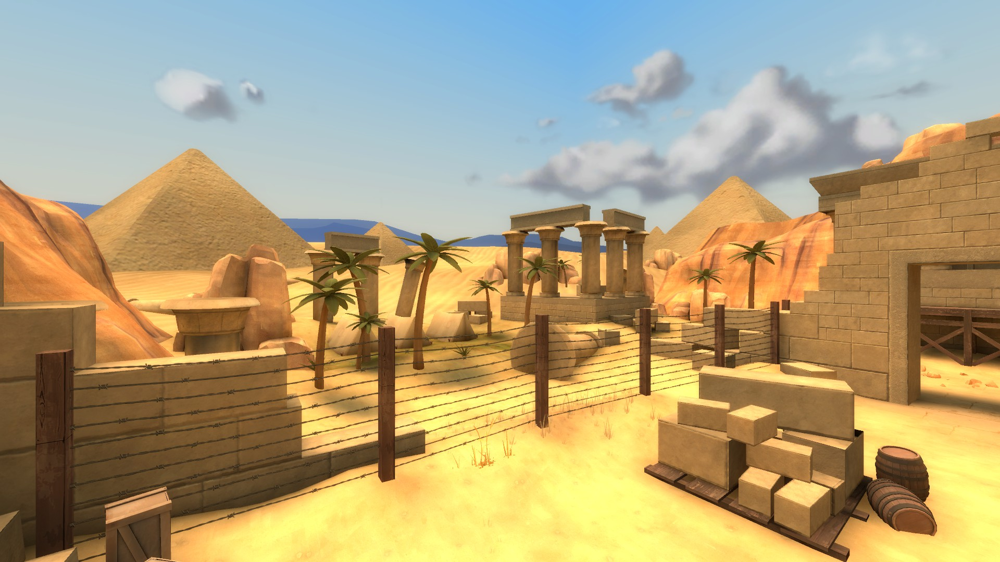
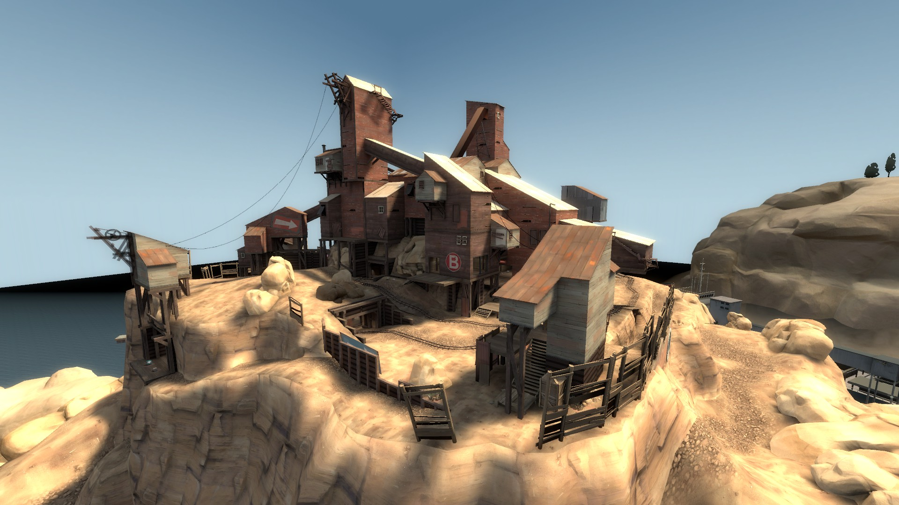
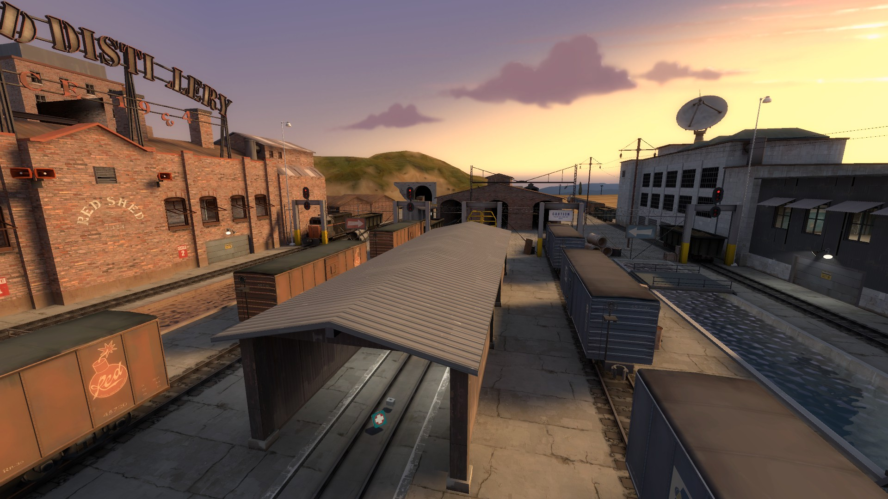

Air temperature:

Air temperature:

Air temperature: 2Fort is a symmetrical map, with each team's intelligence located in an underground fortress beneath the two buildings. The design allows players to "come together and battle it out along the center bridge". Ghost Fort is an official King of the Hill map, released as part of the Spectral Halloween Special on October 26, 2012. One key deviation from all other King of the Hill maps is the round length. To win Ghost Fort, a team must have controlled the point for at least seven minutes, versus the usual three.